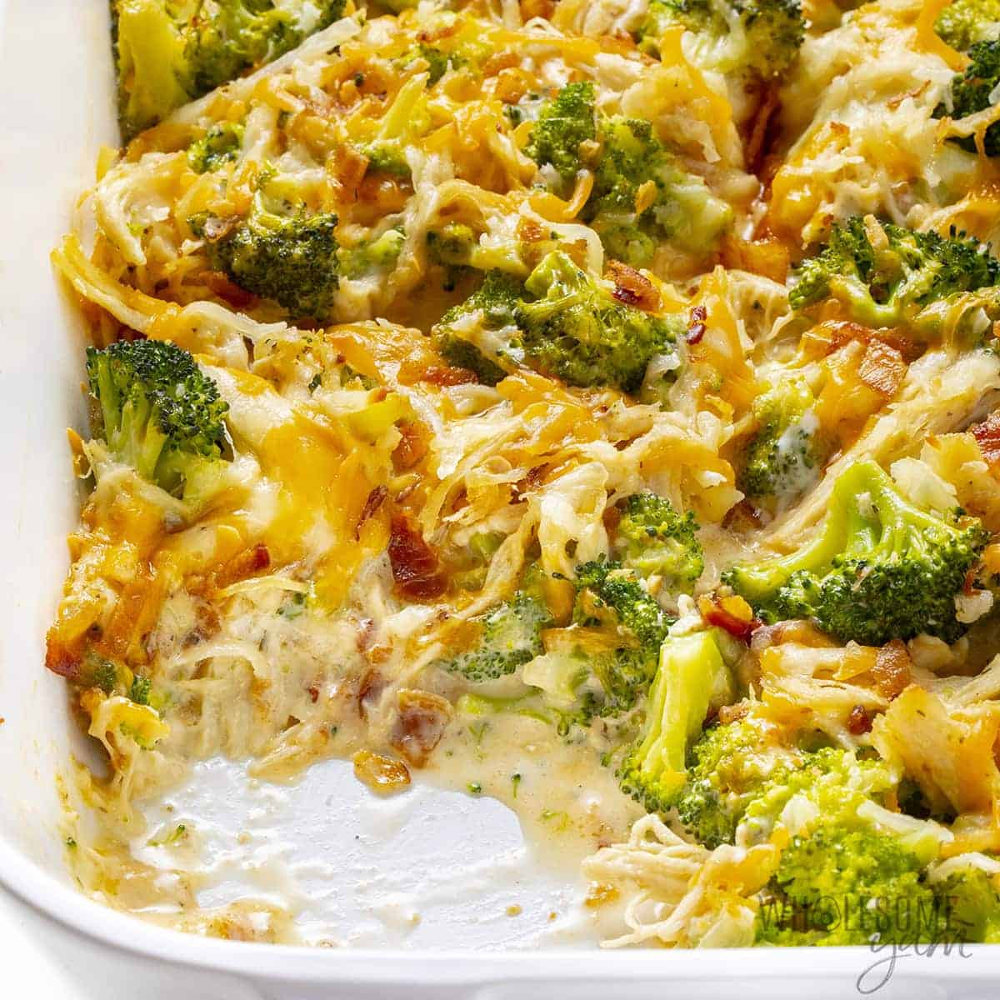

Casserole

Description
A casserole (French: diminutive of casse, from Provençal cassa 'pan'[1]) is a
kind of large, deep pan or bowl used for cooking a variety of dishes
in the oven; it is also a category of foods cooked in such a vessel.
To distinguish the two uses, the pan can be called a "casserole dish" or
"casserole pan", whereas the food is simply "a casserole".
The same pan is often used both for cooking and for serving.
Ingredients
- 2 cups water
- 2 (10 ounce) cans chunk chicken, drained
- 1 (16 ounce) package frozen chopped broccoli
- 1 pound processed cheese food, cubed
- 1 (10.75 ounce) can condensed cream of mushroom soup
- 1 (10.75 ounce) can condensed cream of chicken soup
- 1 cup milk
- ¼ cup butter, cubed
- 1 small white onion, chopped
Steps
- Preheat the oven to 350 degrees F (175 degrees C).
- Bring water to a boil in a medium saucepan; stir in instant rice, cover, and remove from heat. Let stand for 5 minutes.
- Mix prepared rice, chicken, broccoli, processed cheese, condensed mushroom soup, condensed chicken soup, milk, butter, and onion in a 9x13-inch baking dish.
- Bake in the preheated oven until cheese is melted, about 30 to 35 minutes. Stir halfway through cooking to help cheese melt evenly.